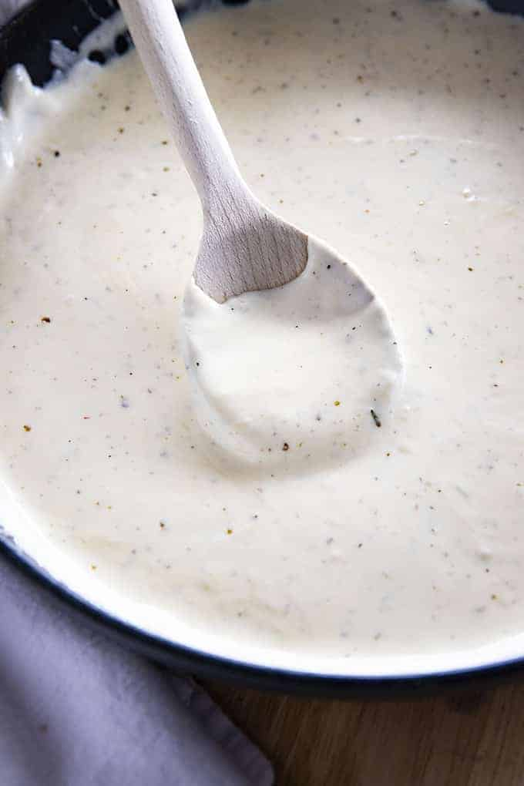

Alfredo Sauce

Description
Traditional Alfredo is a simple white/cream sauce. It is made from butter, heavy cream, and parmesan cheese. While the original style is great, I simply like to add garlic, salt, pepper, and Italian seasoning to make Alfredo sauce taste even better!
Ingredients
- 1/2 Cup Butter
- 1 1/2 Cups Heavy Whipping Cream
- 2 Teaspoons Garlic Minced
- 1/2 Teaspoon Italian Seasoning
- 1/2 Teaspoon Salt
- 1/4 Teaspoon Pepper
- 2 Cups Freshly Grated Parmesan Cheese
Steps
- Add the butter and cream to a large skillet.
- Simmer over low heat for 2 minutes.
- Whisk in the garlic, Italian seasoning, salt, and pepper for one minute.
- Whisk in the parmesan cheese until melted.
- Serve immediately.